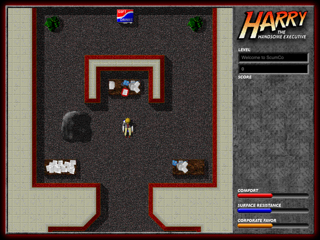
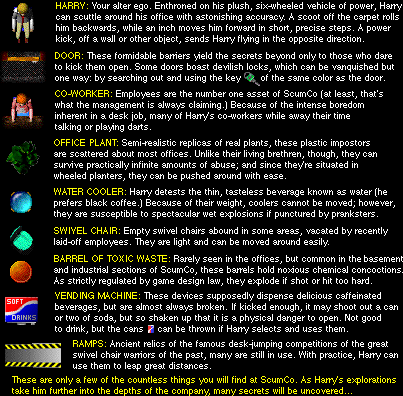
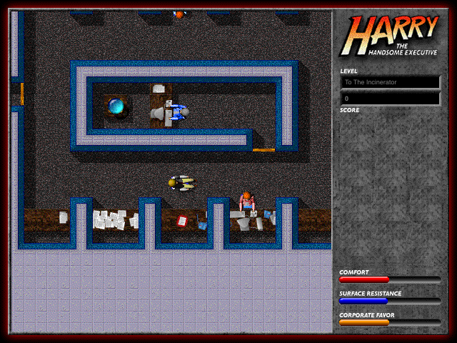
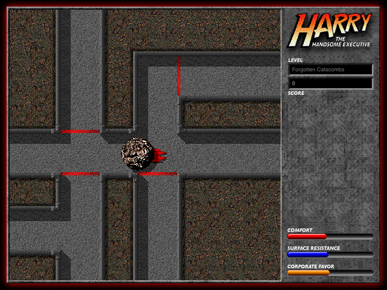
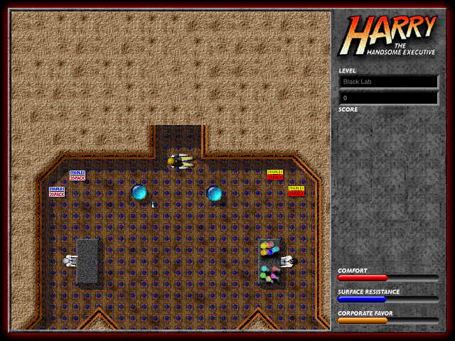
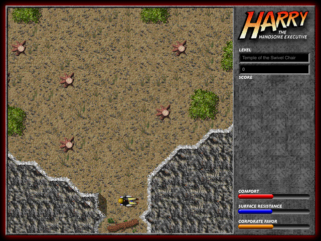
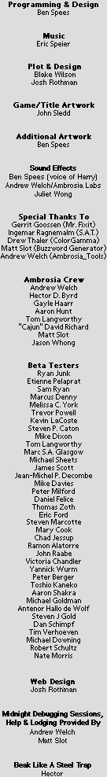
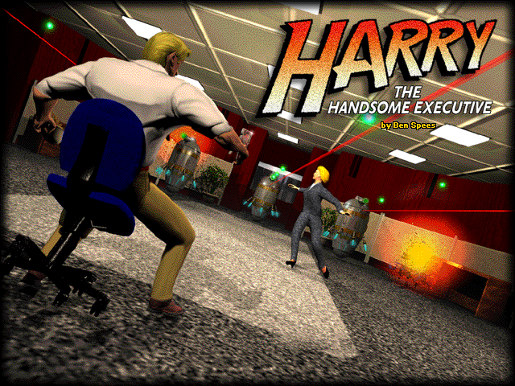

Harry the Handsome Executive, the 1997 Mac game by Ben Spees and Ambrosia Software, rewritten to run on macOS, Windows and Linux. The same office, the same swivel chair, the same rebellious robots - and the same rules, taken from the original's program code.
The game
Harry is the newest executive at ScumCo, and his first assignment is a crucial one: the robots who staff the customer service lines have revolted. Harry meets them the way an executive should, in his plush six-wheeled swivel chair. He scoots across the carpet by pushing his feet off the floor, inches forward, turns, and kicks whatever gets in his way.
Fifteen levels lead from the ScumCo offices down into labs, catacombs and stranger places. Keep an eye on three meters: Comfort (Harry's health), Surface Resistance (the floor under his wheels) and Corporate Favor. On the way: staple guns, coffee, keys, ramps to jump, co-workers who would rather talk about last night's game, and memos from the boss.

At ScumCo
Doors open with the key of their colour or a well-aimed kick. Office plants, water coolers, spare swivel chairs and barrels of toxic waste can all be pushed around - and some of them explode. Vending machines hand out cans that make fine projectiles.
Everything moves the way it did in 1997: Harry glides, bounces off walls and objects, flies off ramps and falls into holes with the original's own physics.

As in 1997
This is not a remake. The levels, pictures, sounds and music come from the original Mac game, and the rules were read from its PowerPC code and checked against it: the original's routines run in an emulator next to this version, and both have to compute exactly the same, case by case.
- The game runs at 30 frames per second, like the original.
- The music is played from the game's QuickTime tunes with its own instruments, no QuickTime needed.
- Bugs of the original are written down. Where fixing one would change how the game plays, it stays.
- New: keys you can change, letters that follow your keyboard layout, full screen, scaling by whole pixels or freely, an options screen during the game, and a pause when you switch to another window. The game plays as a registered copy.
Screens




Play
With Homebrew on a Mac or on Linux, install the game and start it:
brew install metalsnake-classic-mac-ports/games/ouro-harry
ouro-harryOr build it from its source code; it takes a few minutes, and the game data is included.
- Install Rust and SDL3. On a Mac with Homebrew:
brew install sdl3 - Get the source:
git clone https://github.com/metalsnake-classic-mac-ports/Ouro-Harry-the-Handsome-Executive cd Ouro-Harry-the-Handsome-Executive - Build and start the game:
cargo run --release -p harry
Work in progress: the whole of Episode 1 plays; see what is still to do.
Keys
| ← → | Turn |
|---|---|
| ↓ | Scoot (push off with both feet) |
| ↑ | Inch forward |
| Space | Kick |
| Control | Select the next item |
| Option / Alt | Use the selected item |
| 1 – 4 | Pick a weapon or the swivel |
| Tab | Map of where Harry has been |
| Caps Lock | Pause |
| Command I / Ctrl I | Options during the game |
| F11 | Full screen |
| Esc | Give up the game (it asks first) |
All of these can be changed in the options.
Credits

Harry the Handsome Executive © 1997 Ben Spees / Ambrosia Software, Inc.:
- Programming & design
- Ben Spees
- Music
- Eric Speier
- Plot & design
- Blake Wilson, Josh Rothman
- Game / title artwork
- John Sledd
- Additional artwork
- Ben Spees
- Sound effects
- Ben Spees (voice of Harry), Andrew Welch / Ambrosia Labs, Juliet Wong
And thanks to the Ambrosia crew, the beta testers and everyone else named in the game's own credits.
Ouro Harry by MetalSnake, 2026. This project is not affiliated with Ambrosia Software or the authors of the original.
